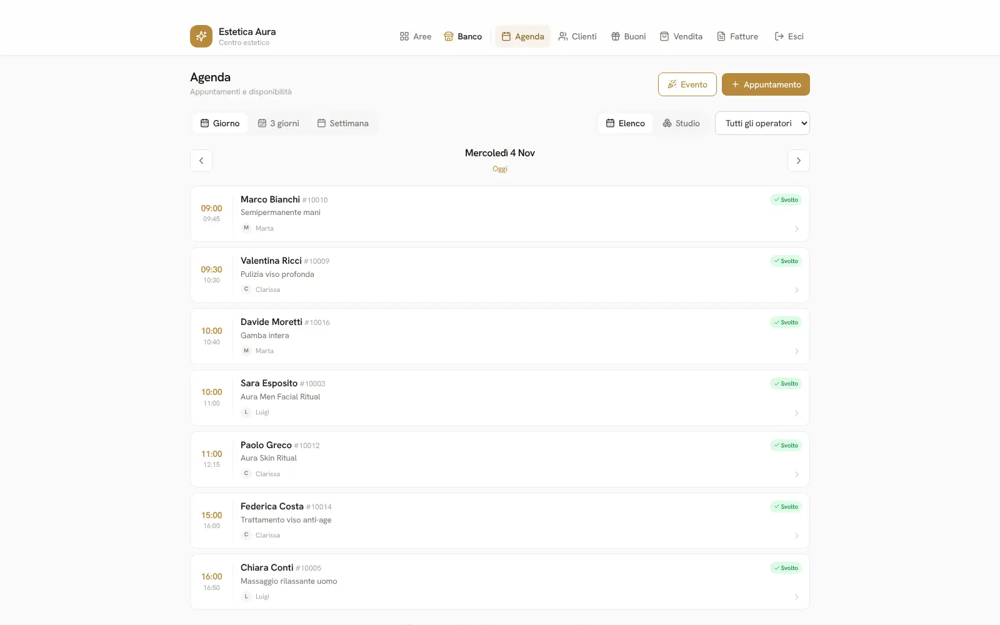
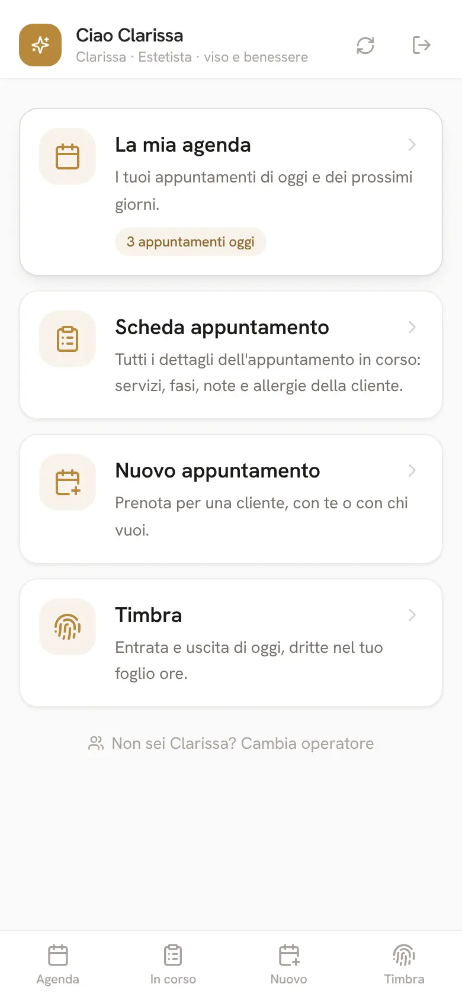
Lucentia non è un abbonamento a un software condiviso con mille altre attività: è un progetto dedicato. Ogni salone ha il suo sito vetrina sul proprio dominio, il suo gestionale su tuodominio.it/gestionale, un database tutto suo e i moduli scelti insieme.
Il sito del salone: foto, servizi col listino, team, eventi, prodotti, contatti, pagine legali. Si aggiorna dal gestionale.
Agenda, clienti, cassa, fatture, magazzino, statistiche, personale, impostazioni. Dal browser, senza installare nulla.
L'app per il telefono delle operatrici e la pagina di prenotazione con l'area del cliente.
Estetica Aura è il centro estetico di prova con cui mostriamo il programma ai clienti. Ha tre operatori — Clarissa (viso e benessere), Marta (mani, piedi ed epilazione) e Luigi (specialista uomo) — tre cabine (viso e massaggi, corpo ed epilazione, Aura Men) e un listino di 61 servizi in otto categorie: Face Rituals, Body Wellness, Epilazione, Nail Care, Aura Men e i pacchetti. Prenotazione online in modalità «ottimizzata», preavviso di 6 ore per spostare o annullare.
Tutti i nomi di clienti, numeri e importi di questo catalogo sono dati di prova.
Dominio, hosting su Cloudflare, sito vetrina, gestionale con i moduli scelti, aggiornamenti e assistenza diretta. Prezzo su preventivo, in base ai moduli e alle personalizzazioni.
Servizi a fasi, operatori, cabine, moduli, testi del sito e delle email, regole di prenotazione: tutto si configura. E ciò che non c'è si realizza su misura (vedi capitolo 13).
All'accesso il gestionale mostra una home con un riquadro per ogni area. Si entra in un'area e si passa fra le sue sezioni; chi ha solo la cassa (Lucentia Cassa) vede direttamente il Banco aperto sulla Vendita.
| Area | Sezioni | A cosa serve |
|---|---|---|
| Banco | Agenda · Clienti · Buoni · Vendita · Fatture | Il lavoro di tutti i giorni: appuntamenti, schede cliente, buoni regalo, cassa con scontrini e storico, fatture elettroniche. |
| Articoli | Catalogo · Carichi · Magazzino · Ordini | Prodotti con formati, costi e giacenze; documenti di carico dai fornitori; magazzino con scorta minima; ordini ai fornitori. |
| Marketing | Messaggi · Statistiche | Messaggi WhatsApp ai clienti; cruscotto della settimana, costo del venduto, incassi e classifiche. |
| Gestione personale | Fogli ore · Riepilogo del mese · Ferie e assenze · Dipendenti | Ore lavorate, timbrature dal telefono, ferie pianificate, straordinari, provvigioni, invio al consulente paghe. |
| Impostazioni | Attività · Servizi · Operatori e cabine · Sito e prenotazioni · Google · Fatture · Dati e backup · Licenza | Tutto ciò che configura il salone, le integrazioni, i backup e il registro delle attività. |
Il programma Windows per il PC del negozio: apre il Banco e parla col registratore telematico Custom e con la stampante delle ricevute. Capitolo 4.
L'app per il telefono delle operatrici: la propria agenda, la scheda dell'appuntamento, un nuovo appuntamento, la timbratura. Capitolo 5.
La prenotazione online con l'account del cliente, i suoi appuntamenti, i punti, i dati. Capitolo 6.
L'agenda mostra la giornata per operatore (vista Elenco) o a griglia con una colonna per ogni risorsa, operatrici e cabine (vista Studio); giorno, 3 giorni o settimana. Un servizio non è «una durata su un operatore» ma una sequenza di fasi su operatori e cabine diversi: applicazione, posa, risciacquo. Gli orari liberi si calcolano sulle risorse reali — turni, chiusure, ferie, cabine con più unità — e la prenotazione manuale può anche sovrapporre di proposito.
L'Aura Skin Ritual dura 75 minuti: 25 minuti di Clarissa, poi 30 di posa in cabina viso senza nessuno, poi 20 minuti ancora con Clarissa. Nei 30 minuti di posa l'agenda propone Clarissa per un contorno occhi da 20 minuti a un'altra cliente; la cabina resta occupata per tutti i 75. In vista Studio si vedono le due fasi come due blocchi con lo spazio vuoto in mezzo.
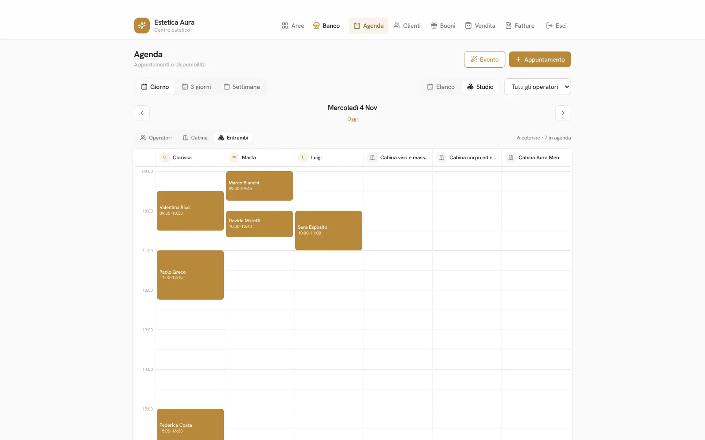
Anagrafica, telefono ed email, storico appuntamenti e acquisti, tessera, note, allergie e patologie con avviso quando si apre l'appuntamento (modulo Allergeni), punti fedeltà e premi (modulo Fidelity), pacchetti prepagati con le sedute residue (modulo Pacchetti), dati di fatturazione, account online collegato.
Anna Rossi ha «Nichel» fra le allergie: quando Marta apre il suo appuntamento per il semipermanente, l'avviso è in alto, in rosso. Elena Romano ha un pacchetto di 5 semipermanenti: a ogni seduta svolta il gestionale ne scala una e mostra «3 di 5 rimaste».
Buoni a valore o a pacchetto con codice univoco, saldo residuo, storico degli utilizzi, stampa elegante; vendibili in cassa.
Carrello con prodotti e servizi, cliente collegato, punti generati, «Venduto da» per le provvigioni, totale o Parziale (acconto). Lo storico mostra ogni vendita con lo scontrino, i resi e gli annulli; da una vendita si emette la fattura. Con Lucentia Cassa i tasti diventano Contanti e Carta / POS e lo scontrino esce dal registratore (capitolo 4).
Fatture e note di credito FatturaPA che nascono dalla cassa, da un appuntamento svolto o da zero, numerazione automatica per anno, regime ordinario o forfettario, bollo virtuale. Con Effatta collegato partono allo SDI con un clic e l'esito (consegnata, scartata…) arriva da solo; le fatture dei fornitori si scaricano da sole e diventano carichi di magazzino. Il riepilogo IVA del mese, trimestre o anno mette a confronto IVA a debito e a credito per aliquota, con il CSV per il commercialista.
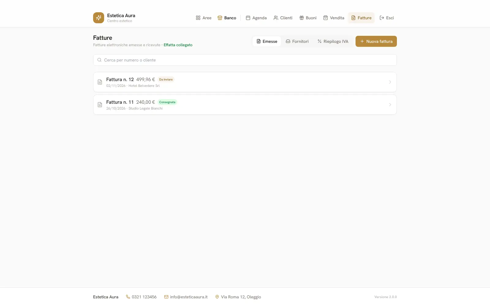
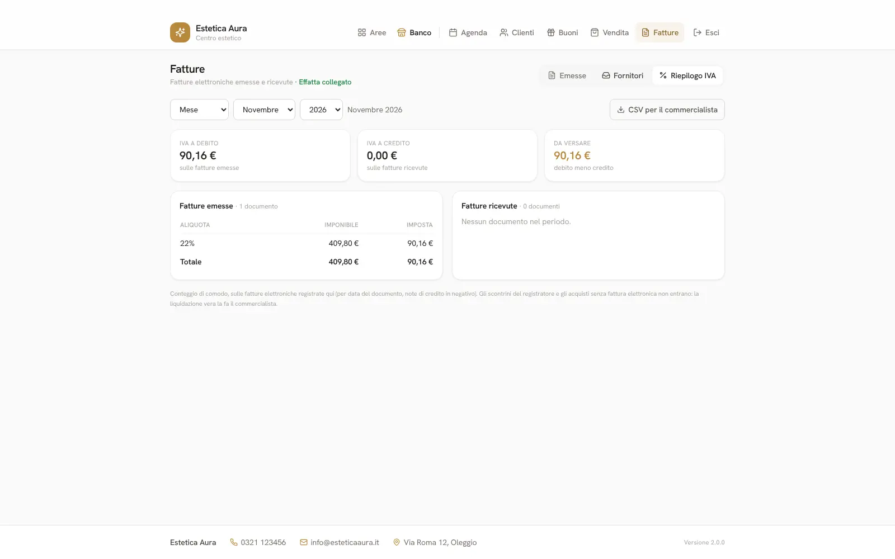
Per chi ha il registratore telematico Custom (K3 RT e gli altri di terza generazione), Lucentia Cassa è il programma Windows che apre il Banco del gestionale e parla col registratore e con la stampante delle ricevute.
Federica Costa paga l'Aura Deep Relax (89 €) e una crema viso (38 €): Luigi preme «Appuntamento», sceglie l'appuntamento di Federica, aggiunge la crema dal catalogo e preme «Carta / POS». Il registratore stampa lo scontrino Z120 n. 41; nello storico restano scontrino, metodo e cliente, e l'appuntamento passa a «svolto · 89 €». Per la ricostruzione unghie con acconto di 30 €, Marta usa «Parziale»: esce la ricevuta non fiscale con «Resta da pagare 35 €».
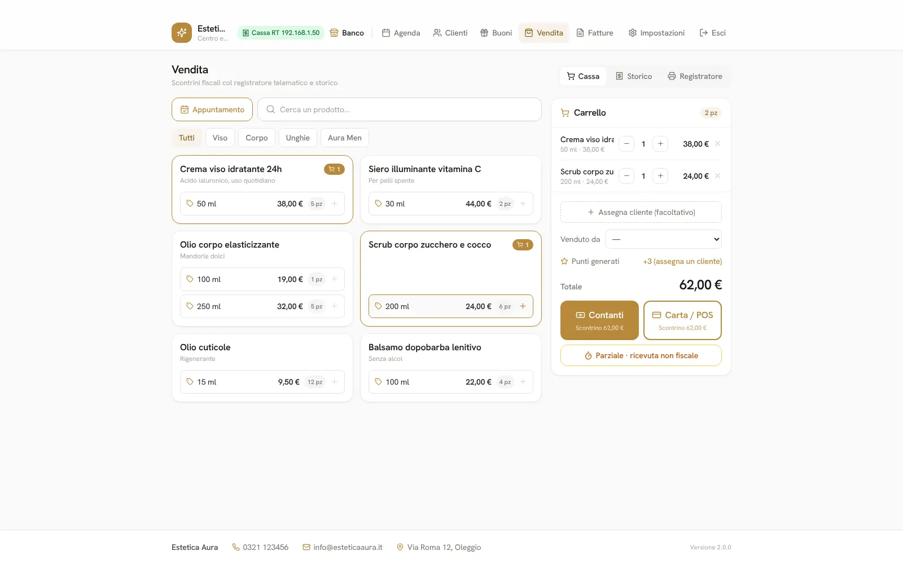
Su tuodominio.it/utenti, con l'accesso del salone, ogni operatrice sceglie il suo nome e ha in tasca ciò che le serve in cabina. Quello che fa dal telefono compare al banco entro un minuto, e viceversa.
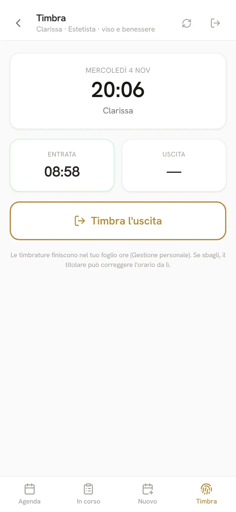
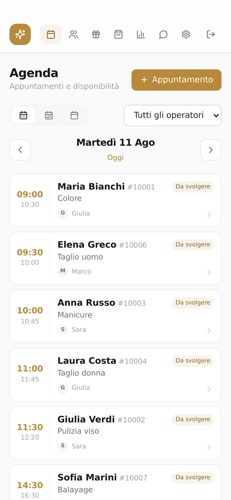
I propri appuntamenti di oggi e dei prossimi giorni, con gli eventi del salone.
L'appuntamento in corso: servizi e fasi, note, allergie e patologie della cliente, pacchetti, chiamata e WhatsApp.
Cliente (anche nuova), servizi, operatore o «il primo libero», orario: quattro passi.
Entrata e uscita di oggi, dritte nel foglio ore della Gestione personale. Se si sbaglia, il titolare corregge da lì.
Clarissa arriva alle 8:58, apre /utenti, tocca «Timbra l'entrata». Alle 10 vede dalla scheda che Sara Esposito ha la pelle sensibile; mentre Sara è in posa, prenota per lei il prossimo rituale fra tre settimane con «il primo libero». Al banco, l'appuntamento è già in agenda.
Il sito vive sul dominio del salone con le sue foto, i suoi colori e i suoi testi: home, servizi col listino per categoria, team, eventi, prodotti, contatti e pagine legali generate dai dati dell'attività. È fatto per i motori di ricerca (titoli, descrizioni, dati strutturati, sitemap) e si aggiorna dal gestionale.
Il cliente sceglie servizio, operatrice (o chiunque) e orario fra quelli davvero liberi. Tre modi di proporre gli orari: anti-vuoto (subito dopo l'ultimo appuntamento), griglia (ogni quarto d'ora) o ottimizzata (gli orari che non lasciano buchi inutilizzabili). Preavviso minimo, giorni in avanti, sospensione temporanea, scelta dei servizi prenotabili.
Dal link di registrazione (dato dal salone, non pubblicato) il cliente crea il suo account con nome, telefono, email e password e riceve l'email di benvenuto. Da «Prenota» entra nella sua area:
Anna Rossi ha un semipermanente giovedì alle 9 con Marta, preso per telefono. Mercoledì sera, dall'area cliente, lo sposta a venerdì alle 11: Aura ha 6 ore di preavviso, quindi è permesso; il gestionale scrive nel registro «Anna Rossi ha spostato l'appuntamento…». A dicembre tocca «Ripeti l'ultimo» e trova già selezionati il semipermanente e Marta.
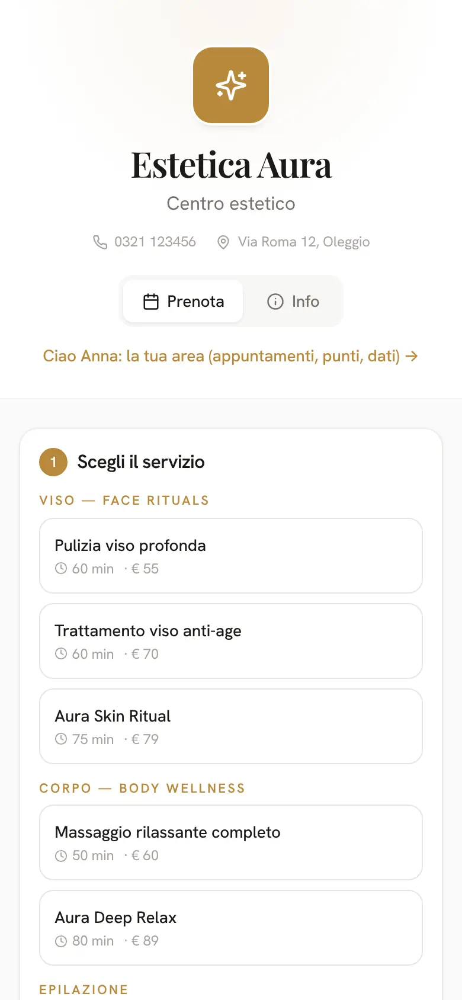
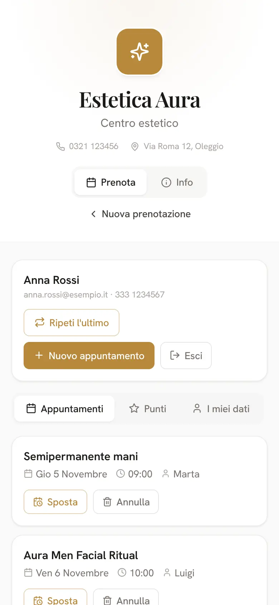
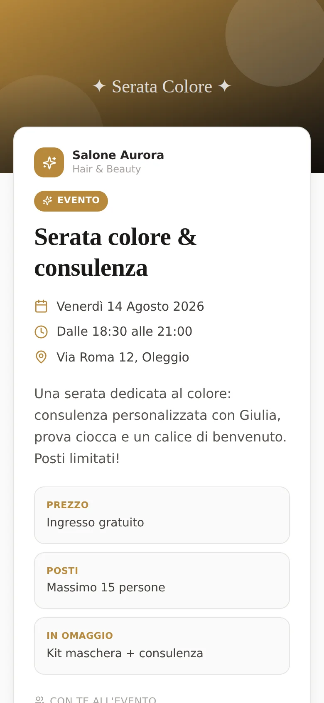
Col modulo Google le email partono dalla casella Gmail del salone e restano fra le sue «Inviate». Testi e firma si personalizzano con i segnaposto (cliente, data, ora, servizi, operatrice, salone…).
| Quando parte | |
|---|---|
| Conferma | A ogni nuovo appuntamento: subito per le prenotazioni online, entro dieci minuti per quelle prese al banco o dal telefono. |
| Promemoria | Alle 19 del giorno prima e un'ora prima dell'appuntamento. |
| Richiesta di recensione | Dopo il primo appuntamento svolto del cliente, una volta sola, col link alla pagina Google o Facebook del salone. |
| Benvenuto | Alla registrazione dell'account, con il riepilogo dei dati. |
| Recupero password | Quando il cliente lo chiede da «Password dimenticata?» (link valido un'ora). |
| Dall'agenda, a mano | Conferma o promemoria mandati dal titolare aprendo l'appuntamento. |
| Ordini e fogli ore | Gli ordini ai fornitori e i fogli ore al consulente paghe partono dalla stessa casella. |
Ogni email parte una volta sola; gli automatismi si accendono o spengono uno per uno. Il Marketing WhatsApp (promemoria, auguri, promozioni dalla scheda cliente) resta a disposizione per chi preferisce il messaggio.
Il siero alla vitamina C è sceso a 2 pezzi, sotto la scorta minima di 2. In Articoli → Ordini, «Proponi dal sotto scorta» prepara l'ordine con 3 pezzi; Clarissa aggiunge 4 oli corpo, scrive ordini@cosmeticinord.it e preme «Invia per email». Quando arriva lo scatolone, «Ricevi la merce» carica tutto in magazzino e l'ordine diventa «ricevuto».
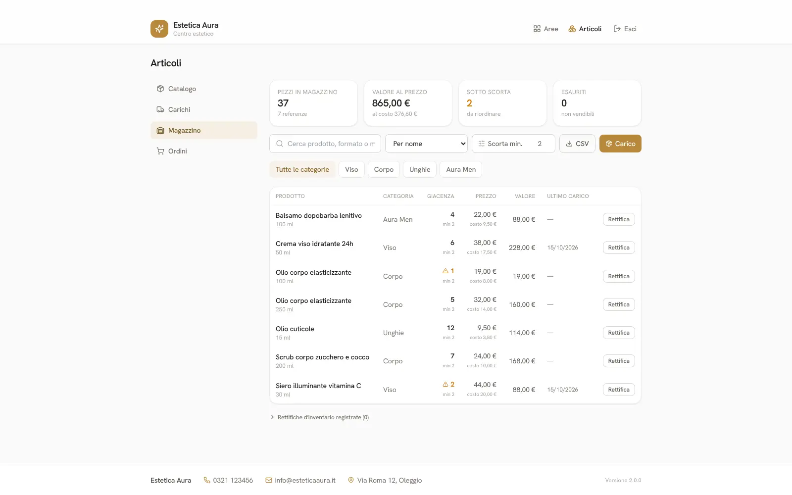
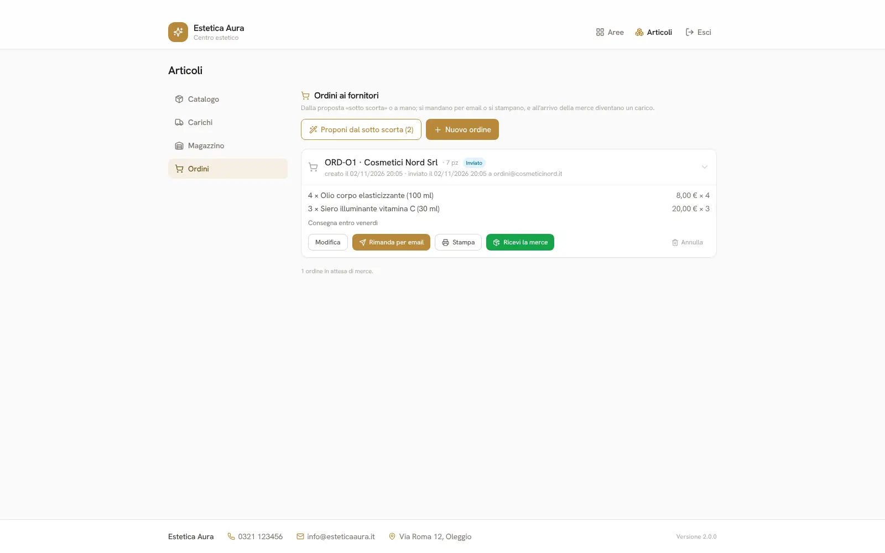
Il cruscotto della settimana mette in una schermata l'incasso (servizi e prodotti), gli appuntamenti svolti, online e annullati, l'occupazione di ogni operatrice (ore impegnate su ore disponibili), i clienti nuovi e abituali, i no-show e il confronto con la settimana prima. Sotto, il costo del venduto con ricavo, costo della merce e margine per prodotto, gli incassi mese per mese, i servizi più richiesti, le fasce orarie, i clienti più attivi e i buoni regalo. Tutto esportabile in CSV.
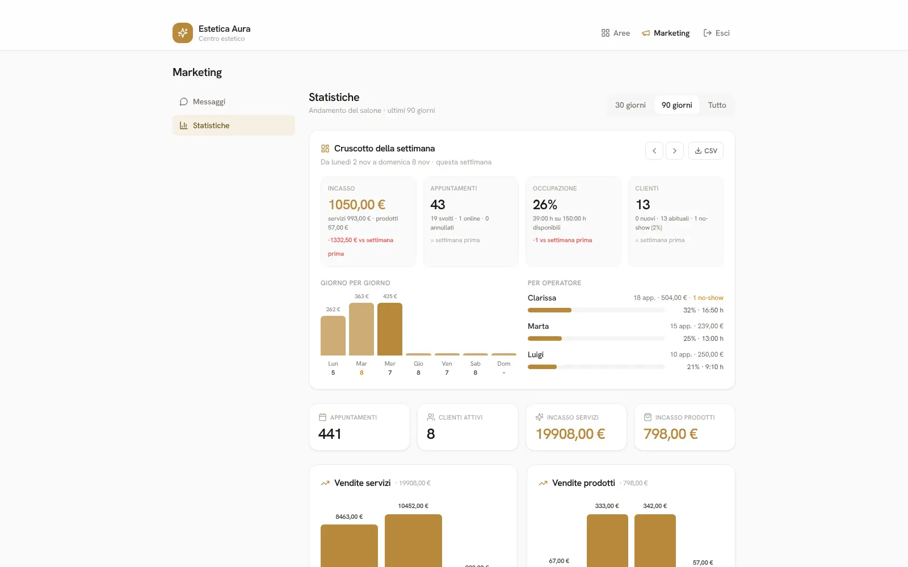
Lunedì mattina il titolare apre le Statistiche: la settimana scorsa Clarissa ha lavorato al 32% delle ore disponibili con 18 appuntamenti e 504 € di servizi, Luigi al 21% nei suoi quattro giorni. Un no-show su 43 appuntamenti (2%). Il margine sui prodotti è del 55%: la crema viso rende bene, lo scrub meno. Decide di proporre lo scrub in abbinamento ai massaggi e di spingere la prenotazione online nei pomeriggi di Luigi.
Marketing WhatsApp (modulo Marketing): clienti che non vengono da tempo, clienti di un servizio o di un prodotto, messaggi pronti con il nome della cliente, inviati da WhatsApp con un tocco.
Marta sarà in ferie dal 13 al 17: il titolare la pianifica in «Ferie e assenze» e la prenotazione online smette di proporla in quei giorni. A fine mese il riepilogo mostra per Clarissa 27 giorni, 3 ore e 37 di straordinari, e 72,40 € di provvigioni (10% sui servizi, 5% sui prodotti). «Invia tutti al consulente» manda i fogli ore allo Studio Paghe Verdi con CSV e PDF.
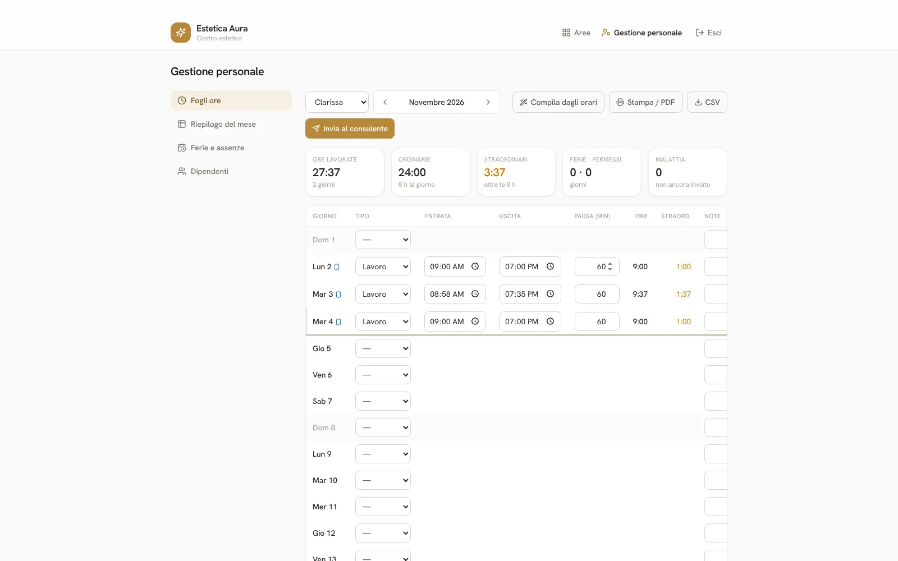
Nome, logo, colori, contatti, orari e chiusure; listino PDF col logo; favicon e foto del sito.
Durata, prezzo, categoria, aliquota, chi può farlo, fasi su operatori e cabine, prenotabile online o no.
Orari di ogni operatrice, ferie, foto o avatar, cabina abituale; cabine con orari propri e più unità; accessi operatore con password.
Testi e foto del sito, dati legali per privacy e cookie, regole di prenotazione, registrazione dei clienti, catalogo in vetrina.
Collegamento Gmail e calendari, testi delle email, automatismi, link recensioni; dati della ditta, numerazione, credenziali Effatta.
Esporta e importa backup; backup automatico in una cartella del PC a un orario; backup scaricato al primo avvio del giorno dal computer; zona ripristino protetta da password.
Chi ha fatto cosa e quando: accessi, salvataggi (con cosa è cambiato), impostazioni, scontrini, fatture, backup, timbrature, modifiche fatte dai clienti dalla loro area. Si filtra per tipo e periodo, si esporta in CSV, si conserva 180 giorni.
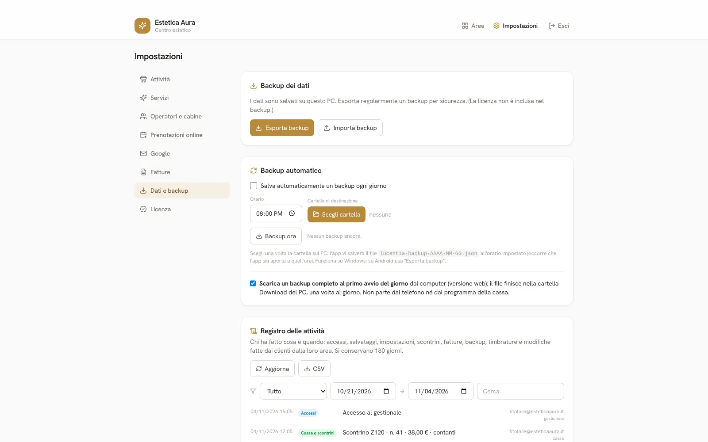
Banco, telefoni delle operatrici, Lucentia Cassa e area dei clienti scrivono nello stesso gestionale. Ogni modifica si salva un record alla volta e arriva agli altri dispositivi entro un minuto: nessuno sovrascrive il lavoro dell'altro.
Niente tasto «salva»: ogni cambiamento parte da solo e resta anche se si chiude la scheda.
Se internet manca, i salvataggi restano in coda e partono appena torna la linea; una spia nell'intestazione lo dice.
Lucentia Cassa si apre anche senza rete dalla copia locale, emette gli scontrini (il registratore è in rete locale) e allinea tutto dopo.
Alle 11 la linea salta. Luigi, in cassa, batte due scontrini: escono dal registratore e restano in attesa. Marta, dal telefono, non riesce a prenotare: lo farà fra dieci minuti. Alle 11:20 la rete torna: i due scontrini salgono sul server, il banco li vede nello storico entro un minuto.
Lucentia nasce per essere adattato al modo di lavorare di ogni salone, all'inizio e ogni volta che qualcosa cambia. Niente di quello che vedi in questo catalogo è fisso.
Ogni installazione ha il suo codice separato dal «ceppo» comune: le personalizzazioni del singolo salone restano sue e gli aggiornamenti generali arrivano lo stesso, senza perderle. Un modulo in più si accende dal portale Lucentia e compare subito nel gestionale, senza interruzioni.
Aura ha chiesto le categorie «Aura Men» separate nel listino del sito e la cabina Aura Men riservata a Luigi: due impostazioni, fatte dal gestionale. Se un giorno volesse una scheda «trattamento viso» con le foto prima/dopo della cliente, è una vista su misura che si aggiunge al suo gestionale senza toccare quello degli altri saloni.
| Modulo | Cosa accende |
|---|---|
| sempre incluso Base | Agenda con operatori, cabine e fasi; clienti; buoni regalo; eventi; app per il telefono; gestione personale; listino PDF; backup; registro delle attività; accessi operatori (secondo il livello). |
| modulo Fidelity & premi | Punti da servizi e vendite, premi, riscatto dalla scheda e dall'area cliente. |
| modulo Pacchetti sedute | Pacchetti prepagati con sedute residue scalate a ogni appuntamento. |
| modulo Cassa, magazzino & ordini | Vendita, storico, catalogo, carichi, magazzino, ordini ai fornitori, costo del venduto. Con Lucentia Cassa, gli scontrini dal registratore Custom. |
| modulo Statistiche & cruscotto | Cruscotto settimanale, costo del venduto, incassi, classifiche, CSV. |
| modulo Marketing WhatsApp | Messaggi ai clienti dalla scheda: inattivi, per servizio, per prodotto. |
| modulo Allergeni & patologie | Schede salute con avvisi sugli appuntamenti. |
| modulo Prenotazioni online | Prenotazione dal sito, account dei clienti, area cliente con sposta/annulla e «Ripeti l'ultimo». |
| modulo Gmail & Google Calendar | Email automatiche dalla casella del salone, calendari a due vie, feed iCalendar, ordini ed email al consulente. |
| modulo Fatture elettroniche | FatturaPA, invio allo SDI tramite Effatta, esiti, fatture dei fornitori, riepilogo IVA. |
| livello Operatori | 1 operatore, fino a 3, oppure illimitati. |
| su misura Integrazioni | Funzioni, collegamenti e automazioni realizzati sul metodo di lavoro del salone. |
1 · Demo gratuita di 10 giorni con tutti i moduli, senza carta di credito. 2 · Progettiamo insieme: servizi, operatori, cabine, moduli, sito. 3 · Online col tuo dominio, con l'affiancamento alla partenza.
Office Solution · Oleggio (NO) · Tel. e WhatsApp 392 024 1955 · Amministrazione@cmav.it · officesolutionoleggio.com · lucentia-app.com
Il prezzo della licenza è su preventivo, in base ai moduli attivati e alle personalizzazioni. Questo catalogo descrive la versione 2.1 di Lucentia (novembre 2026); le funzioni evolvono con gli aggiornamenti, inclusi nella licenza.